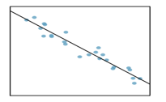

Chapter 13 MATH 224: Introduction to Linear Regression
13.1 Linear Regression
Regression analysis concerns the study of relationships between quantitative variables: identifying, estimating, and validating the relationship.
(Simple) linear regression is to study if the relationship between two numerical variables is linear, and the strength of the linear association.
We begin with the scatter plot of two numerical variables, to observe if there is a linear association.
If there seems to be a linear relationship, we use the linear model \(y = \beta_0 + \beta_1x\) to best fit the data.
Using a sample data set \((x_i, y_i)\) for \(i = 1, \ldots, n\) and least squares error, we derive an estimated model \(\hat{y} = b_0 + b_1x\).
Prediction (Predicted value)
If the least square regression model is given by \(\hat{y} = b_0 + b_1x\), then for a given \(x\), the predicted value is \(\hat{y} = b_0 + b_1x\) – plug in the value of \(x\).
Interpreting the slope and the y-intercept of a regression line
The slope \(b_1\) is the amount by which the predicted value \(y\) changes when \(x\) is increased by one unit.
The y-intercept \(b_0\) is the predicted value of \(y\) when \(x = 0\).
Residual
For a data set \((x_i, y_i)\) for \(i = 1, \ldots, n\), the error of using the model is: \(e_i = y_i - \hat{y}_i = y_i - (b_0 + b_1x_i)\)
The Correlation Coefficient
- The mathematical formula is:
\(R = \frac{1}{n-1}\sum_{i=1}^n \frac{(x_i - \bar{x})(y_i - \bar{y})}{s_x s_y}\)
The value of \(R\): \(-1 \leq R \leq 1\)
The closer \(|R|\) is to 1, the stronger the linear association.
The Coefficient of Determination: \(R^2\)
The coefficient of determination \(R^2\) is a measure used in statistical analysis to assess how well a model explains and predicts future outcomes.
\(R^2\) is the proportion (fraction) of the variation in the response variable that is predictable (can be explained) from the explanatory variable.
Conditions to have the least squares regression
Visually inspect the scatter plot:
- The relationship between the explanatory and the response variable should be linear.
- The histogram of residuals distribution should be normal (symmetric, bell-shaped).
- The variability of points should be roughly constant.
- No extreme outliers.
Computing the coefficients in \(\hat{y} = b_0 + b_1x\)
\(b_1 = \frac{s_y}{s_x} R\)
\(b_0 = \bar{y} - b_1 \bar{x}\)
Notes
\(R\) and \(b_1\) have the same sign.
Equivalently, \(R = \frac{s_x}{s_y} b_1\)
Exercise 1
Describe the linear relationship from the scatter plot.

Select the correct choice.
(a) Strong positive relationship
(b) Strong negative relationship
(c) Weak positive relationship
(d) Weak negative relationship
Exercise 2
The mean travel time from one stop to the next on the Coast Starlight is 129 minutes, with a standard deviation of 113 minutes. The mean distance from one stop to the next is 108 miles with a standard deviation of 99 miles. The correlation between travel time and distance is 0.636.
(a) Write the equation of the regression line for predicting travel time (based on the distance).
(b) Interpret the slope and the intercept in this context.
(c) Calculate and interpret \(R^2\).
(d) The distance between Santa Barbara and LA is 103 miles. Use this model to estimate the time it takes to travel between these two cities.
(e) It actually takes the Coast Starlight about 168 minutes to travel between Santa Barbara and LA. Calculate the residual. Is the model over or underestimating the time?